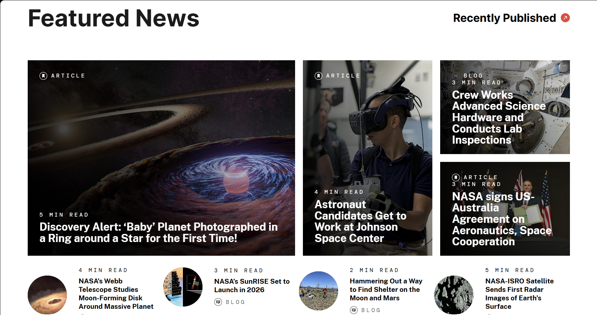

NASA
The target audience for this website is people who are interested in space and want to learn more about it.
The site is organized in a way where sections are segmeneted throughout the website. There is a top navigation bar that allows users to easily access different sections of the website such as missions, galleries, and news. And on the homepage, there are featured articles and images that highlight important topics and events related to space exploration.
Contrast: NASA's site uses high contrast between dark text and white backgrounds for readability, and bold photographs for emphasis.
Repetition: Navigation, fonts, and button styles are consistent across all pages to maintain consistency and make the page easier to traverse.
Alignment: Elements are grid-aligned, creating a professional, balanced appearance.
Proximity: Related content is grouped together, such as articles under specific categories, making it easier for users to find information.
Using the lighthouse feature on chrome it rates the accessibility score of 96 out of 100. The website provides alt text for images and has proper heading structures around the webpage.
The site is very effective at engaging the user and allowing them to learn more about space. The website has images about the topcis they talk about and features blogposts that the user can read.
The website is very efficient. Everything loads in very quickly and the website is very responsive.
The website is very engaging and is good at keeping the user on the site. It has striking visuals to keep the user engaged and lots of information alongside it to educate the user.
The only critique I have against this website is that it can possibly be over stimulating to someone trying to learn about space. There are a lot of images thorughout the webpage and many different links the user can click on which can be distracting.